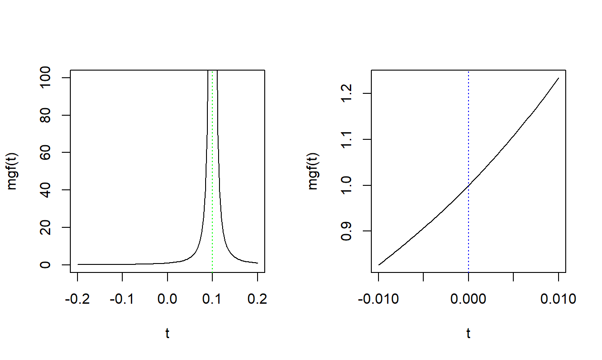

The traditional loss distribution approach to modeling aggregate losses starts by separately fitting a frequency distribution to the number of losses and a severity distribution to the size of losses. The estimated aggregate loss distribution combines the loss frequency distribution and the loss severity distribution by convolution. Discrete distributions often referred to as counting or frequency distributions were used in Chapter 2 to describe the number of events such as number of accidents to the driver or number of claims to the insurer. Lifetimes, asset values, losses and claim sizes are usually modeled as continuous random variables and as such are modeled using continuous distributions, often referred to as loss or severity distributions. A mixture distribution is a weighted combination of simpler distributions that is used to model phenomenon investigated in a heterogeneous population, such as modeling more than one type of claims in liability insurance (small frequent claims and large relatively rare claims). In this chapter we explore the use of continuous as well as mixture distributions to model the random size of loss.
Although not needed to go through the tutorials, some users may wish to download the overheads that the videos are based on.
By watching the videos and working through the tutorial exercises, you will get an appreciation for distributions used to model the severity of losses. For a deeper dive, see the corresponding chapter in the textbook, Chapter Three of Loss Data Analytics.
3.1 Basic Distributional Quantities
In this section, you learn how to work with some basic distributional quantities:
moments,
percentiles, and
generating functions.
Video: Basic Distributional Quantities
Overheads: Basic Distributional Quantities (Click Tab to View)
Hide
Hide
Hide
Hide
Hide
Hide
Hide
Hide
Hide
Hide
Hide
Hide
Hide
3.1.1 Exercise. Moments Can Be Misleading
Assignment Text
Anscombe’s quartet is comprised of four datasets with interesting properties related to their moments. You can access the data via data(anscombe). The four data sets are in the variables y1, y2, y3 and y4. There are also associated x values that create interesting properties for regression models fit to the data. We’ll ignore the x values in this section but will use them to develop the plots below.
Instructions
Extract the values y1, y2, y3 and y4 from the anscombe data frame. You will want to extract these as vectors not as single-column data frames.
Use summary() to understand the basic distributional properties of y1, y2, y3 and y4.
Use mean() to calculate the first raw moment of y1, y2, y3 and y4. Assign the values to Vec_Means.
Use var() to calculate the second raw moment of y1, y2, y3 and y4. You should note that the var() function uses \(n-1\) in the denominator to return an estimate of the population variance from the sample. Do you notice anything interesting about the results?
There is no base-R function to calculate the coefficient of skewness. There are several approaches to calculate skewness if you explore the help() for the type argument of the skewness function from the e1071 package. We will not use this package, but instead we will we calculate the equivalent of type = 3 skewness using sd() in the denominator.
3.1.2 Exercise. Determining Boxplots and Quantiles
Assignment Text
The boxplot() function produces box-and-whisker plots. Specifically, the boxplot() function returns certain statistics and produces a plot as a side effect. Explore the documentation to understand the values returned. In particular review the information returned by the stats attribute of this object.
The Wisconsin Property Fund data has already been read into a data frame called Insample. These data consist of claim experience for fund members over the years 2006-2010, inclusive. It includes claim values y as well as the claim year Year. For this exercise we will work with the natural logarithm of the claim values which are in the lny variable. The data have been filtered to exclude zero claims and then saved into a data frame named Insample_nz.
Instructions
We start with code to generate the boxplot. Note that R creates the boxplot as a side effect while returning information about the data. (R does not print the information to the console by default. You will have to assign the return of the boxplot function to an object to access.)
What is the class of the object returned by the boxplot function?
Access the stats attribute of the object returned and check that the third column provides results for year 2008.
Create a global variable, named lny_2008, for logarithmic claims corresponding to year 2008.
Use the quantile() function and replicate the “hinge” values for the 2008 box. (We ignore the values returned for the whiskers as they are not a function of the quantiles of the distribution.)
Follow up. We selected the 2008 year because it has an odd number of observations. Use the quantile() function on a vector with an even number such as 1:100 and access the 25th percentile. Are you surprised by the result? Review the details for the type argument to the quantile() to understand the various approached to determining quantiles.
We will work with this distribution in this exercise. The parameters that we will use in our exercise are \(\alpha=2\) (the shape parameter) and \(\theta = 10\) (the scale parameter). Keep in mind that the mean for this distribution is \(\alpha\theta=20\) and the variance is \(\alpha\theta^2 = 200\). We will revisit these results at the end of the exercise.
There are several R functions that you will find useful:
The parse() function converts a character vector to an expression(). Then, you can use the eval() to evaluate the expression.
Use the parse() function to create an expression and for the moment generating function. Specify the expression using alpha, theta and t. Name the object mgf.
Note the class of mgf.
Evaluate mgf at t = 0 when alpha = 2 and theta = 10. (Note that you do not need to specify the values of alpha and theta and t in the eval call. That is because we did not specify the envir argument to eval and the default is parent.frame(). Environments are a more advanced R topic that you can learn about here.
3.1.4 Exercise. Visualizing Moment Generating Functions
Assignment Text
We plot mgf to help visualize the function. The left-hand panel shows the function with the argument \(t\) is between -0.2 and 0.2. For \(\theta = 10\) and \(\alpha > 0\), note that mgf goes to +inf when \(t = \frac{1}{\theta} = 0.1\). The right-hand panel shows the function between -0.01 and 0.01. This provides a better view of the curvature at zero.

Instruction
Use the D() function to return an expression for the first and second derivatives with respect to \(t\). Assign the results of dMxtdt and d2Mxtdt2, respectively.
In this section, you learn how to define and apply four fundamental severity distributions:
gamma,
Pareto,
Weibull, and
generalized beta distribution of the second kind.
R provides a “family” of functions associated with statistical distributions. The naming convention is to precede the distribution name with d for the density function, p for the cumulative distribution function, q for quantiles (percentiles), and r for random number generation. (We will set aside the r functions for Chapter 6 in Loss Data Analytics and focus on d, p, and q functions.)
The stats packages which is provided with base-R includes the distributions listed here. Many other distributions are available in other R packages.
For the exercises in the section, we will focus on the gamma distribution from Section 3.2.1 of Loss Data Analytics to help you develop an intuition as to how the distribution responds to changes in its shape and scale parameter. From Figure 3.1, you should recognize that the support for the gamma distribution is positive real numbers. You’ll also note that the distribution allows for varying levels of “right-skewness.”
Video: Continuous Distributions
Overheads: Continuous Distributions (Click Tab to View)
Hide
Hide
Hide
Hide
Hide
Hide
Hide
Hide
Hide
3.2.1 Exercise. Visualizing a Distribution using a Histogram
Assignment Text
We will be working with the Wisconsin Property Fund data. We have read the data and created a vector of the logarithm of non-zero claim values. The name of that vector is wisc_prop.
Instructions
Use the hist() function to plot a histogram of wisc_prop.
Review the help for hist() and note that the histogram is drawn as a “side-effect.” We can access the information generated with the histogram by assigning the result to an object. For this exercise, you should assign that information to hist_data. Note the class of hist_data.
Use the str() function to review the structure of elements of the list returned by the histogram function hist().
3.2.2 Exercise. Visualizing the Gamma Distribution
Assignment Text
From the histogram, we will develop an intuition as to whether a gamma distribution is likely to fit this data reasonably well. Consider whether the data is uni-modal and whether it is right-skewed. It appears to be which would support the modeling of log-claim sizes using the gamma distribution.
You’ll note that the \(y\)-axis of the histogram displays counts. In contrast, the dgamma function returns density values. So we can not add a gamma distribution to the histogram and compare to the data. Instead we first need to plot the density values of the data. To plot probability densities, we will use set the probability argument to hist to TRUE. You should note the following from the documentation of hist:
The relationship between the that the probability and freq arguments to hist.
There is a density argument to hist. As first, you may think this refers to the (probability) density function, but that argument specifies a plotting feature.
You can use the curve() function to plot the gamma distribution over the histogram data. To do this, you need to set the add argument to TRUE.
In later sections, we’ll review approaches to parameter estimation. In this section, we will vary the shape and scale parameters to understand the flexibility of the gamma distribution. The data will serve as a reference for this exercise. You may recall from the exercises from Section 3.1.3 that the mean of the gamma function is the product of the shape and scale parameters and the variance is the product of the shape and square of the scale parameters. You can use this information to develop parameter estimates using the method of moments.
Instructions
Again plot the histogram. This time specify the probability argument so as to plot probability densities.
Calculate shape and scale parameters using the method of moments
Calculate the density values for \(x\) values displayed within the limits of the plot.
Add 3 to the shape parameter and note how the distribution changes.
Subtract 0.05 from the scale parameter and note how the distribution changes.
3.2.3 Exercise. Creating a Pareto Density Function
Assignment Text
Packages in R exist for most continuous distributions, however, it is useful to be able to know how to write your own functions.
For this exercise we will write a R function to find the density (the pdf) of a random variable that follows a Pareto distribution. We will subsequently use this function in Exercise 3.5.1.
Instructions
Write a function to find the density of a Pareto distribution.
Give insights into when a distribution is preferred when compared to alternatives.
Provide foundations for creating new distributions.
Video: Creating Distributions I
Overheads: Creating Distributions I (Click Tab to View)
Hide
Hide
Hide
Hide
Hide
Hide
Hide
Hide
Hide
Video: Creating Distributions II
Overheads: Creating Distributions II (Click Tab to View)
Hide
Hide
Hide
Hide
Hide
Hide
Hide
Hide
Hide
3.3.1 Exercise. Using the Logarithmic Transformation to Create a New Distribution
Assignment Text
For this exercise we will be modeling claim severity data with a gamma distribution, and we will then apply a log transformation to the distribution. (Recall that we use the natural logarithmic transform throughout, unless specified otherwise.)
In this exercise we generate the probability density function (pdf) of the gamma distribution that corresponds with these parameters, and we then plot the pdf of the log of the claim severities, by transforming the gamma pdf. We will assume that the claim severities follow a gamma distribution with a known shape parameter \(\alpha=0.63\) and scale parameter \(\theta=16897\).
Instructions
Use dgamma() to generate a pdf of the claim severities. You are given the shape parameter \(\alpha= 0.63\) and scale parameter \(\theta=16897\) for the gamma distribution fit.
Write the R code for the pdf of the claim severity, assuming that claim severity follows a gamma distribution with the above parameters.
Write the R code for the pdf of the log claim severity, by transforming the gamma pdf. Hint: If \(X\) is claim severity and \(Y=\log(X)\) then you need to find the pdf of \(Y\).
Plot the fitted pdf curve of the log claim severity for this subpopulation.
Insurance portfolios often consist of subpopulations which might have different claim severity distributions. In this exercise, we will use the Wisconsin Property Fund data to generate a mixture distribution, where it is assumed that different entities (village, city, country, miscellaneous, school and town) have different claim severity distributions.
We use the following assumptions:
We will use the number of claims for each entity from the data as weights for the mixture distribution.
For each entity, the claim severities are assumed to be gamma distributed with different shape parameters \(\alpha\) and different scale parameters \(\theta\).
You can modify the code used in Exercise 1.5.1 to extract the claim numbers from the Property Fund data. After combining the gamma probability density functions together to produce a mixture distribution, we plot the pdfs for the log of the claim severities for each subpopulation and the mixture distribution.
Instructions
Extract the number of claims from the Property Fund data.
Combine the gamma density functions for the claim severity for each subpopulation together to generate the pdf of a mixture distribution. When generating the mixture distribution, use the number of claims for each entity as weights.
Use dgamma() to generate the pdf of the claim severities for each subpopulation. The parameters \(\alpha\) and \(\theta\) for each subpopulation are given below.
Plot each of the pdf curves of the log claim severities in the same figure. Exercise 3.3.1 shows how to find the pdf for log claim severities.
Superimpose the pdf of mixture distribution of the log claims on to the plot of the pdf curves of the log claim severities.
The values of \(\alpha\) and \(\theta\) for the fitted gamma distribution for each entity type are:
\[{\small \begin{matrix}
\begin{array}{l | r | r}
\hline
\text{Entity Type} & \alpha~~~ & \theta~~~ \\
\hline
\text{Village} & 0.630 & 16897\\
\text{City} & 0.511 & 33119\\
\text{County} & 0.637 & 24259\\
\text{Misc} & 0.347 & 124023\\
\text{School} & 0.324 & 198599\\
\text{Town } & 0.361 & 54933\\
\hline
\end{array}
\end{matrix}}\]
In this section we evaluate the impacts of coverage modifications:
deductibles,
policy limit,
coinsurance, and
reinsurance on insurer’s costs.
Video: Policy Deductibles
Overheads: Policy Deductibles (Click Tab to View)
Hide
Hide
Hide
Hide
Hide
Hide
Hide
Hide
Hide
Video: Policy Limits
Overheads: Policy Limits (Click Tab to View)
Hide
Hide
Hide
Hide
Hide
Hide
Hide
Hide
Hide
3.4.1 Exercise. Calculate Moments of the Lognormal Distribution
Assignment Text
The support of the lognormal distribution is positive real numbers and the distribution is right-skewed. Given these properties, claim values for many coverages follow a lognormal distribution. R provides many several functions related to the lognormal() distribution.
Particularly useful for calculations related to the effect of coverage modifications, the plnorm() function returns the distribution function for a lognormal. Specifically, the limited expected value function is useful for calculating limited claim values, that is, claims amounts subject to policy limits. See the summary in Section 18.2.5 of Loss Data Analytics.
The limited expected value of \(X\) at limit, \(L\), can be calculated as follows:
\[
LEV[x;L] = \int_0^L x f_X(x) ~dx ~+ L \times [1 - F_X(L)] .
\]
The first term on the right-hand side is the contribution to the expected value for claims that are less than \(L\) and the second term is the expected value of all claims greater than or equal to \(L\).
For the exercises in this section, we provide the mlnorm() and levlnorm() functions to calculate unlimited mean and limited expected values, respectively with arguments meanlog and sdlog corresponding to the same arguments in the plnorm() function. The levlnorm() function requires an additional limit argument.
We also provide the vector claims which are observed claims values from lognormal distribution with meanlog = 12 and sdlog = 1.5. The values of meanlog and sdlog are saved in the mu and sigma objects.
Instructions
Calculate the expected value of the lognormal function and compare to the mean of claims.
Calculate the expected value of the claims retained by the insured using the levlnorm() function and the compare to the mean of claims.
3.4.2 Exercise. Calculate Limited Expected Value of the Lognormal Distribution
Assignment Text
Now, assume that an insurer provides coverage for the first $ 5 million of claims.
Instruction
Calculate the expected value of the claims insured with a $ 5 million policy limit using the levlnorm() function and then compare to the amounts insured from claims.
3.4.3 Exercise. Expected Claims Subject to a Deductible
Assignment Text
When an insurer provides coverage with a deductible, only a portion of claims result in reimbursement. The claims that do produce reimbursement have a greater average value than the average value for all claims.
For this exercise, assume that an insurer provides coverage for the first $ 5 million of claims in excess of a $ 1 million deductible. Note that this coverage is sometimes stated as $ 4 million excess of $ 1 million (or shorthand notation such as $ 4 mln xs $ 1 mln).
Instructions
Determine the number of claims resulting in reimbursement. Compare to the expected value of the number of claims requiring reimbursement calculated using the plnorm function.
Calculate the amounts insured. Do this in two steps. First, subset claims to only include amounts in excess of $ 1 million. Second, calculate the average value of those claims.
Calculate the expected value of the claims insured subject to a $ 1 million deductible and a $ 5 million policy limit using the levlnorm() and plnorm() function and the compare to the amounts you calculated in the prior step. Note that these are the ‘ground-up’ values meaning that they include the amounts within the deductible.
Overheads: Policy Coinsurance and Reinsurance (Click Tab to View)
Hide
Hide
Hide
Hide
Hide
Hide
Hide
3.4.4 Exercise. Expected Claims Subject to a Deductible and Coinsurance
Assignment Text
For this exercise, assume that an insurer provides coverage for the first $ 5 million of claims in excess of a $ 1 million deductible. Note that this coverage is sometimes states as $ 4 million excess of $ 1 million (or shorthand notation such as $ 4 mln xs $ 1 mln). (This is the same as the prior exercise.) However, now you should assume that there is a 20% coinsurance provision. The number of claims will not differ from the prior exercise, so will focus on the average value.
Instructions
Calculate the expected insured value of the claims subject to a $ 1 million deductible and 20% coinsurance and a $ 5 million policy limit using the levlnorm() and plnorm() functions and the compare to the amounts insured from claims. In contrast to the prior exercise, calculate the insured value of the claim rather than the ground-up value.
Define a likelihood for a sample of observations from a continuous distribution.
Define the maximum likelihood estimator for a random sample of observations from a continuous distribution.
Estimate parametric distributions based on grouped, censored, and truncated data.
Video: Maximum Likelihood Estimation
Overheads: Maximum Likelihood Estimation (Click Tab to View)
Hide
Hide
Hide
Hide
Hide
Hide
Hide
Hide
Hide
3.5.1 Exercise. Maximum Likelihood Estimation for a Pareto Distribution
Assignment Text
For this exercise we will undertake maximum likelihood estimation to fit a Pareto distribution to claim severity data.
Because we have two parameters in a Pareto distribution, undertaking maximum likelihood involves finding the estimates that maximize the likelihood surface. Visualizing the likelihood surface may help to gain an appreciation of how maximum likelihood works. After finding the parameter estimates, we plot out a contour plot of the likelihood and mark the maximum likelihood estimates on the plot.
Instructions
Extract claim severity data from the Property Fund data.
Write a function to calculate the negative log-likelihood for the claim severity data, assuming that claim severity is Pareto distributed. The pdf function for a Pareto distribution [dpareto()], which was created in Exercise 3.2.3, can be used when finding the negative log-likelihood.
Find the maximum likelihood estimates by using optim() to minimize the negative log-likelihood.
Plot a contour plot of the likelihood using contour(), and use points() to mark the maximum likelihood estimates on the plot.
3.5.2 Exercise. Finding Standard Errors for Maximum Likelihood Estimates
Assignment Text
For this exercise we calculate 95% confidence intervals for the parameters based on estimates that we found in Exercise 3.5.1. The theory underpinning mle confidence intervals is described in Section 15.3 of Loss Data Analytics.
The parameters that we have estimated depend on the data, and since the data can be considered as a random sample from a larger unknown population, maximum likelihood estimators are random variables. A property of maximum likelihood is that the estimators converge in distribution to a normal distribution, as \(n\) gets larger.
If we minimize the negative log-likelihood, we can use the Hessian matrix (which is a matrix of the second-order partial derivatives) to find the variance of the estimators. Specifically, the standard errors of the estimators are equal to the square root of the diagonal elements of the inverse of the Hessian matrix.
Some useful R functions for this exercise are:
The solve() function can be used to find the inverse of a square matrix.
The diag() function extracts the diagonal of a matrix.
The qnorm() function which finds quantiles of a normal distribution.
Instructions
Use solve() to calculate the inverse of the Hessian matrix. The Hessian is one of the outputs from the optim() function, and can be extracted from lik_result which was found in the previous exercise.
Use diag() to extract the diagonals of the inverse of the Hessian.
Calculate the standard errors of the parameter estimates by taking the square root of the diagonal elements of the inverse of the Hessian matrix.
Use the standard errors to calculate 95% confidence intervals.
Authors. Tim Higgins , Australian National University, Fei Huang, University of New South Wales (UNSW) Sydney, Nii-Armah Okine, Appalachian State University, and Rajesh (Raj) Sahasrabuddhe, Oliver Wyman Actuarial Consulting, are the principal authors of the initial version of this chapter.